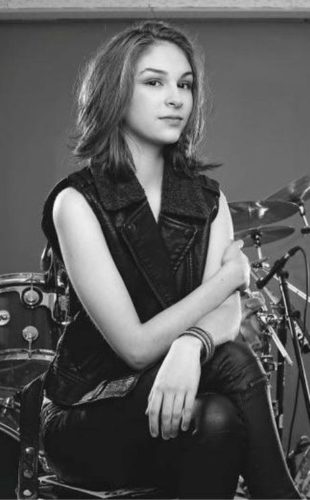
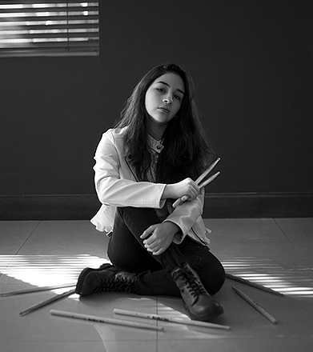
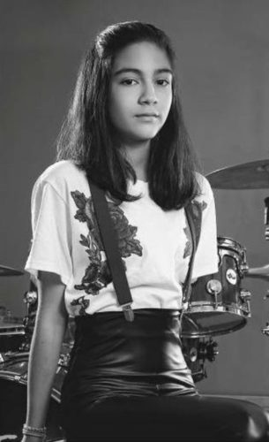

The Warning es una banda de rock formada por las hermanas Alejandra, Paulina y Daniela. La agrupación se hizo conocida en YouTube por realizar covers de emblemáticas bandas como Metallica, AC/DC, Muse y Guns N' Roses. La banda firmó con el sello Victoria Records y en abril de 2015 lanzaron en iTunes su primer EP inédito, Escape the Mind, que incluía cinco temas de su autoría: “Take Me Down”, “Fade Away”, “Eternal Love”, “Escape the Mind” y “Free Falling". Poco después fueron entrevistadas como fenómeno de las redes sociales en el show de Ellen Degeneres. En 2017, tras una campaña de crowdfunding, sale a la venta su disco XXI Century Blood, con 13 canciones originales. El disco se distribuye a través de su sitio web y en las diferentes plataformas digitales (Amazon, Google Play, iTunes y Spotify). La banda ha estado presente en prensa, radio y televisión. El 25 de noviembre del 2018 lanzaron al público su segundo álbum de estudio, Queen of the Murder Scene. El 30 de junio de 2019, en la ciudad de Bogotá, Colombia, se presentaron exitosamente en la edición por los 25 años de "Rock al Parque", el tercer festival de música al aire libre y gratuito más grande del mundo y el primero en Iberoamérica. También participaron en el año 2018 de Hell & Heaven, uno de los festivales de metal más grandes de Latinoamérica, pisando los mismos escenarios de aristas como Ozzy Osbourne o Judas Priest, y teniendo una participación exitosa.
|  |  |  |
| Daniela Villarreal(Vocalista, piano y guitarra) | Paulina Villarreal(Vocalista, coros, piano y batería) | Alejandra Villarreal(Coros, piano y bajo) |